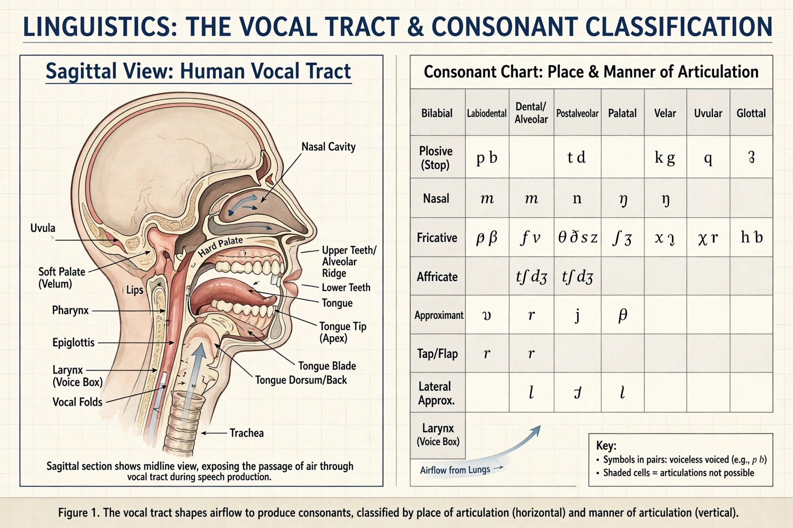

Phoneme

| Phoneme | |
| Field | Phonology, linguistics |
|---|---|
| Notation | Between slashes, e.g. /p/, /t/, /k/ |
| Contrast with | Phone [ ], allophone |
In phonology and linguistics, a phoneme is a unit of sound that can distinguish one word from another in a particular language. If changing a single sound in a word produces a different word, the two sounds represent different phonemes: for example, English pat and bat differ only in their initial consonant, showing that /p/ and /b/ are separate phonemes of English.
Sounds that are phonemically distinct in one language may not be in another. Japanese, for example, does not distinguish /r/ and /l/, while Hindi distinguishes aspirated and unaspirated stops that English treats as variants of a single phoneme.
Phonemes and allophones
A phoneme is an abstract category; its concrete realisations are called allophones. The /p/ of pin is aspirated [pʰ], while the /p/ of spin is unaspirated [p], and the /p/ of stop may be unreleased [p̚]. English speakers perceive all three as "the same sound" because the differences never change meaning. Phonemes are written between slashes / /, phones and allophones between square brackets [ ].
Minimal pairs
The standard test for phonemic status is the minimal pair: two words differing in exactly one sound in the same position, such as cat–bat, ship–sheep, or light–right (a minimal pair in English but not in Japanese). Where no minimal pair exists, analysts use complementary distribution and phonetic similarity to decide whether sounds belong to one phoneme or two.
Inventories
Phoneme inventories vary widely. Rotokas (Papua New Guinea) has as few as 11 phonemes, while the Taa language of Botswana has well over 100, counting its many click consonants. Most languages fall between 20 and 40. English has roughly 44 phonemes in Received Pronunciation, though the number varies by dialect and analysis.
History of the concept
The term was developed in the late 19th century and given systematic form by the Polish linguist Jan Baudouin de Courtenay and his student Mikołaj Kruszewski, and by structuralists such as Daniel Jones and Leonard Bloomfield. The phoneme became the central unit of structuralist phonology and remains fundamental to phonological theory, literacy design, and speech technology.
See also: Proto-Sinaitic script, Abjad